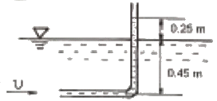
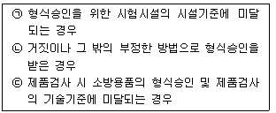
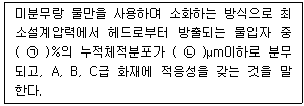

소방설비산업기사(기계) (2020-06-06 기출문제)
1과목: 소방원론
1. 화재안전기준상 이산화탄소 소화약제 저압식 저장용기의 설치기준에 대한 설명으로 틀린 것은?
- 충전비는 1.1 이상 1.4 이하로 한다.
- 3.5MPa 이상의 내압시험압력에 합격한 것이어야 한다.
- 용기내부의 온도가 -18℃ 이하에서 2.1MPa의 압력을 유지할 수 있는 자동냉동장치를 설치해야 한다.
- 내압시험압력의 0.64~0.8배의 압력에서 작동하는 봉판을 설치해야 한다.
(정답률: 56%)

2. 화재로 인하여 산소가 부족한 건물 내에 산소가 새로 유입된 때에는 고열가스의 폭발 또는 급속한 연소가 발생하는데 이 현상을 무엇이라고 하는가?
- 파이어 볼
- 보일 오버
- 백 드래프트
- 백 화이어
(정답률: 78%)
3. 0℃의 얼음 1g을 100℃의 수중기로 만드는데 필요한 열량은 약 몇 cal인가? (단, 물의 용융열은 80cal/g, 증발잠열은 539cal/g이다.)
- 518
- 539
- 619
- 719
(정답률: 71%)
4. 공기 중의 산소는 약 몇 vol%인가?
- 15
- 21
- 28
- 32
(정답률: 82%)
5. 연소 또는 소화약제에 관한 설명으로 틀린 것은?
- 기체의 정압비열은 정적비열보다 크다.
- 프로판가스가 완전연소하면 일산화탄소와 물이 발생한다.
- 이산화탄소 소화약제는 액화할 수 있다.
- 물의 증발잠열은 아세톤, 벤젠보다 크다.
(정답률: 56%)
6. 다음 중 전기 화재에 해당하는 것은?
- A급화재
- B급화재
- C급화재
- K급화재
(정답률: 85%)
7. 물을 이용한 대표적인 소화효과로만 나열된 것은?
- 냉각효과, 부촉매효과
- 냉각효과, 질식효과
- 질식효과, 부촉매효과
- 제거효과, 냉각효과, 부촉매효과
(정답률: 79%)
8. 표소화약제의 포가 갖추어야 할 조건으로 적합하지 않은 것은?
- 화재면과의 부착성이 좋을 것
- 응집성과 안정성이 우수할 것
- 환원시간(drainage time)이 짧을 것
- 약제는 독성이 없고 변질되지 말 것
(정답률: 80%)
9. 다음 중 인화점이 가장 낮은 것은?
- 경유
- 메틸알코올
- 이황화탄소
- 등유
(정답률: 71%)
10. 자연발화를 일으키는 원인이 아닌 것은?
- 산화열
- 분해열
- 흡착열
- 기화열
(정답률: 66%)
11. 열전달에 대한 설명으로 틀린 것은?
- 전도에 의한 열전달은 물질 표면을 보온하여 완전히 막을 수 있다.
- 대류는 밀도차이에 의해서 열이 전달된다.
- 진공 속에서도 복사에 의한 열전달이 가능하다.
- 화재시의 열전달은 전도, 대류, 복사가 모두 관여된다.
(정답률: 67%)
12. 불연성 물질로만 이루어진 것은?
- 황린, 나트륨
- 직린, 유황
- 이황화탄소, 니트로글리세린
- 과산화나트륨, 질산
(정답률: 70%)
13. 피난대책의 일반적 원칙이 아닌 것은?
- 피난수단은 원시적인 방법으로 하는 것이 바람직하다.
- 피난대책은 비상시 본능 상태에서도 혼돈이 없도록 한다.
- 피난경로는 가능한 한 길어야 한다.
- 피난시설은 가급적 고정식 시설이 바람직하다.
(정답률: 80%)
14. 기체상태의 Halon 1301은 공기보다 약 몇 배 무거운가? (단, 공기의 평균분자량은 28.84이다.)
- 4.⑤배
- 5.17배
- 6.12배
- 7.01배
(정답률: 62%)
15. 건물화재에서의 사망원인 중 가장 큰 비중을 차지하는 것은?
- 연소가스에 의한 질식
- 화상
- 열충격
- 기계적 상해
(정답률: 86%)
16. 공기 중 산소의 농도를 낮추어 화재를 진압하는 소화방법에 해당하는 것은?
- 부촉매소화
- 냉각소화
- 제거소화
- 질식소화
(정답률: 79%)
17. 다음 중 독성이 가장 강한 가스는?
- C3H9
- O2
- CO2
- COCl2
(정답률: 77%)
18. 물과 반응하여 가연성 가스를 발생시키는 물질이 아닌 것은?
- 탄화알루미늄
- 칼륨
- 과산화수소
- 트리에틸알루미늄
(정답률: 67%)
19. 전기화재의 원인으로 볼 수 없는 것은?
- 중합반응에 의한 발화
- 과전류에 의한 발화
- 누전에 의한 발화
- 단락에 의한 발화
(정답률: 77%)
20. 위험물별 성질의 연결로 틀린 것은?
- 제2류 위험물-가연성 고체
- 제3류 위험물-자연발화성 물질 및 금수성 물질
- 제4류 위험물-산화성 고체
- 제5류 위험물-자기반응성 물질
(정답률: 80%)
2과목: 소방유체역학
21. 표준대기압 하에서 온도가 20℃인 공기의 밀도(kg/m3)는? (단, 공기의 기체상수는 287J/kgㆍK이다.)
- 0.012
- 1.2
- 17.6
- 1000
(정답률: 50%)
22. 안지름 25cm인 원판으로 1500m 떨어진 곳(수평거리)에 하루에 10000m3의 물을 보내는 경우 압력강하(kPa)는 얼마인가? (단, 마찰계수는 0.035이다.)
- 58.4
- 584
- 84.8
- 848
(정답률: 52%)
23. 직경이 20mm에서 40mm로 돌연확대하는 원형 관이 있다. 이 때 직경이 20mm인 관에서 레이놀즈수가 5000이라면 직경이 40mm인 관에서의 레이놀즈수는 얼마안가?
- 2500
- 5000
- 7500
- 10000
(정답률: 41%)
24. 다음 중 점성계수가 큰 순서대로 바르게 나열한 것은?
- 공기＞물＞글리세린
- 글리세린＞공기＞물
- 물＞글리세린＞공기
- 글리세린＞물＞공기
(정답률: 65%)
25. 10kg의 액화 이산화탄소가 15℃의 대기(표준대기압) 중으로 발출되었을 때 이산화탄소의 부피(m3)는? (단, 일반기체상수는 8.314kJ/kmolㆍK이다.)
- 5.4
- 6.2
- 7.3
- 8.2
(정답률: 43%)
26. 점성계수 μ의 차원으로 옳은 것은? (단, M은 질량, L은 길이, T는 시간이다.)
- ML-1T-1
- MLT
- M-2L-1T
- MLT2
(정답률: 60%)
27. 어떤 펌프가 1000rpm으로 회전하여 전양정 10m에 0.5m3/min의 유량을 방출한다. 이 때 펌프가 2000rpm으로 운전된다면 유량(m3/min)은 얼마인가?
- 1.2
- 1
- 0.7
- 0.5
(정답률: 61%)
28. 열역학 제2법칙에 관한 설명으로 틀린 것은?
- 열효율 100%인 열기관은 제작이 불가능하다.
- 열은 스스로 저온체에서 고온체로 이동할 수 없다.
- 제2종 영구기관은 동작물질의 종류에 따라 존재할 수 있다.
- 한 열원에서 발생하는 열량을 일로 바꾸기 위해서는 반드시 다른 열원의 도움이 필요하다.
(정답률: 55%)
29. 밑면은 한 변의 길이가 2m인 정사각형이고 높이가 4m인 직육면체 탱크에 비중이 0.8인 유체를 가득 채웠다. 유체에 의해 탱크의 한쪽픅면에 작용하는 힘(kN)은?
- 125.4
- 169.2
- 178.4
- 186.2
(정답률: 48%)
30. 단면적이 0.1m2에서 0.5m2로 급격히 확대되는 관로에 0.5m3/s의 물이 흐를 때 급격확대에 의한 부차직 손실수두(m)는?
- 0.61
- 0.78
- 0.82
- 0.98
(정답률: 36%)
31. 어떤 수평관에서 물의 속도는 28m/s이고, 압력은 160kPa이다. (ㄱ)속도수두와 (ㄴ)압력수두는 각각 얼마인가?
- (ㄱ)40m, (ㄴ)14.3m
- (ㄱ)50m, (ㄴ)14.3m
- (ㄱ)40m, (ㄴ)16.3m
- (ㄱ)50m, (ㄴ)16.3m
(정답률: 52%)
32. 대기압이 100kPa인 지역에서 이론적으로 펌프로 물을 끌어올릴 수 있는 최대 높이(m)는?
- 8.8
- 10.2
- 12.6
- 14.1
(정답률: 55%)
33. 유체의 흐름에 있어서 유선에 대한 설명으로 옳은 것은?
- 유동단면의 중심을 연결한 선이다.
- 유체의 흐름에 있어서 위치벡터에 수직한 방향을 갖는 연속적인 선이다.
- 모든 점에서 유체흐름의 속도벡터의 방향을 갖는 연속적인 선이다.
- 정상류에서만 존재하고 난류에서는 존재하지 않는다.
(정답률: 49%)
34. 비중이 0.85인 가연성 액체가 직경 20m, 높이 15m인 탱크에 저장되어 있을 때 탱크 최저부에서의 액체에 의한 압력(kPa)은?
- 147
- 12.7
- 125
- 14.7
(정답률: 34%)
35. 표준대기압 상태에서 소방펌프차가 양수시작 후 펌프 입구의 진공계가 10cmHg를 표시하였다면 펌프에서 수면까지의 높이(m)는? (단, 수은의 비중은 13.6이며, 모든 마찰손실 및 펌프 입구에서의 속도수두는 무시한다.)
- 0.36
- 1.36
- 2.36
- 3.36
(정답률: 54%)
36. 동점성계수가 2.4×10-4m2/s이고, 비중이 0.88인 40℃ 엔진 오일을 1km 떨어진 곳으로 원형관을 통하여 완전발달 틍류상태로 수송할 때 관의 직경 100mm이고 유량 0.02m3/s이라면 필요한 최소 펌프동력(kW)은?
- 28.2
- 30.1
- 32.2
- 34.4
(정답률: 21%)
37. 완전 흑체로 가정한 흑연의 표면 온도가 450℃이다. 단위 면적당 방출되는 복사에너지의 열유속(kW/m2)은? (단, 흑체의 Stefan-Boltzmann 상수 σ=5.67×10-8 W/m2ㆍK4이다.)
- 2.33
- 15.5
- 21.4
- 232.5
(정답률: 37%)
38. 그림과 같은 단순 피토관에서 물의 유속(m/s)은?

- 1.71
- 1.98
- 2.21
- 3.28
(정답률: 42%)
39. 온도 20℃, 절대압력 400kPa, 기체 15m3을 등온압축하여 체적이 2m3로 되었다면 압축 후의 절대압력(kPa)은?
- 2000
- 2500
- 3000
- 4000
(정답률: 48%)
40. 4kg/s의 물 제트가 평판에 수직으로 부딪힐 때 평판을 고정시키기 위하여 60N의 힘이 필요하다면 제트의 분출속도(m/s)는?
- 3
- 7
- 15
- 30
(정답률: 54%)
3과목: 소방관계법규
41. 소방기본법령상 소방활동에 필요한 소화전ㆍ급수탑ㆍ저수조를 설치하고 유지ㆍ관리하여야 하는 사람은? (단, 수도법에 따라 설치되는 소화전은 제외한다.)
- 소방서장
- 시ㆍ도지사
- 소방본부장
- 소방파출소장
(정답률: 69%)
42. 다음 소방시설 중 소방시설공사업볍령상 하자보수 보증기간이 3년이 아닌 것은?
- 비상방솔설비
- 옥내소화전설비
- 자동화재탐지설비
- 물분무등소화설비
(정답률: 69%)
43. 다음 중 위험물안전관리법령상 제6류 위험물은?
- 유황
- 칼륨
- 황린
- 질산
(정답률: 68%)
44. 화재예방, 소방시설 설치ㆍ유지 및 안전관리에 관한 법률상 2급 소방안전관리대상물의 소방안전관리자로 선임될 수 없는 사람은?
- 위험물기능사 자격을 가진 사람
- 소방공무원으로 3년 이상 근무한 경력이 있는 사람
- 의용소방대원으로 3년 이상 근무한 경력이 있는 사람
- 2급 소방안전관리대상물의 소방안전관리에 관한 시험에 합격한 사람
(정답률: 56%)
45. 화재예방, 소방시설 설치ㆍ유지 및 안전관리에 관한 법률상 소방안전관리대상물의 관계인이 소방안전관리자를 선임할 경우에는 선임한 날부터 며칠 이내에 소방본부장 또는 소방서장에게 신고하여야 하는가?
- 7
- 14
- 21
- 30
(정답률: 60%)
46. 소방기본법령상 시ㆍ도의 소방본부와 소방서에서 운영하는 화재조사전담부서에서 관장하는 업무가 아닌 것은?
- 화재조사의 실시
- 화재조사를 위한 장비의 관리운영에 관한 사항
- 화재피해 감소를 위한 예방 홍보에 관한 사항
- 화재조사의 발전과 조사요원의 능력량상에 관한 사람
(정답률: 64%)
47. 위험물안전관리법령상 위험물의 안전관리와 관련된 업무를 시행하는 자로서 소방청장이 실시하는 안전교육대상자가 아닌 사람은?
- 제조소등의 관계인
- 안전관리자로 선임된 자
- 위험물운송차로 종사하는 자
- 탱크시험자의 기술인력으로 종사하는 자
(정답률: 50%)
48. 소방시설공사업법상 소방시설업의 등록을 하지 아니하고 영업을 한 사람에 대한 벌칙은?
- 500만원 이하의 벌금
- 1년 이하의 징역 또는 2천만원 이하의 벌금
- 3년 이하의 징역 또는 3천만원 이하의 벌금
- 5년 이하의 징역 또는 5천만원 이하의 벌금
(정답률: 63%)
49. 화재예방, 소방시설 설치ㆍ유지 및 안전관리에 관한 법률상 건축물대장의 건축물 현황도에 표시된 대지경계선 안에 둘 이상의 건축물이ㅣ 있는 경우, 연소 우려가 있는 건축물의 구조에 대한 기준으로 맞는 것은?
- 건축물이 다른 건축물의 외벽으로부터 수평거리가 1층의 경우에는 6m 이하인 경우
- 건축물이 다른 건축물의 외벽으로부터 수평거리가 2층의 경우에는 6m 이하인 경우
- 건축물이 다른 건축물의 외벽으로부터 수평거리가 1층의 경우에는 20m 이상의 경우
- 건축물이 다른 건축물의 외벽으로부터 수평거기라 2층의 경우에는 20m 이상인 경우
(정답률: 49%)
50. 화재예방, 소방시설 설치ㆍ유지 및 안전관리에 관한 법률상 무창층 여부 판단 시 개구부 요건에 대한 기준으로 맞는 것은?
- 도로 또는 차량이 진입할 수 없는 빈터를 향할 것
- 내부 또는 외부에서 쉽게 파괴 또는 개방할 수 없을 것
- 크기는 지름 50cm 이상의 원이 내집할 수 있는 크기일 것
- 해당 층의 바닥면으로부터 개구부 밑부분까지의 높이가 1.5m 이내일 것
(정답률: 50%)
51. 화재예방, 소방시설 설치ㆍ유지 및 안전관리에 관한 법률상 소방시설관리업 등록의 결격사유에 해당하지 않는 사람은?
- 미성년후견인
- 소방시설 관리업의 등록이 취소된 날로부터 2년이 지난 자
- 금고 이상의 형의 집행유예를 선고받고 그 유예기간 중에 있는 자
- 금고 이상의 실형을 선고받고 그 집행이 면제된 날부터 2년이 지나지 아니한 자
(정답률: 49%)
52. 다음 보기 중 화재예방, 소방시설 설치ㆍ유지 및 안전관리에 관한 법률상 소방용품의 형식승인을 반드시 취소하여야만 하는 경우를 모두 고른 것은?

- ㉡
- ㉢
- ㉡, ㉢
- ㉠, ㉡, ㉢
(정답률: 54%)
53. 소방기본법령상 소방대원에게 실시할 교육ㆍ훈련의 횟수 및 기간으로 옳은 것은?
- 1년마다 1회, 2주 이상
- 2년마다 1회, 2주 이상
- 3년마다 1회, 2주 이상
- 3년마다 1회, 4주 이상
(정답률: 69%)
54. 소방기본법령상 벌칙이 5년 이하의 징역 또는 5천만원 이하의 벌금에 해당하지 않는 것은?
- 정당한 사유 없이 소방용수시설의 효용을 해치거나 그 정당한 사용을 방해하는 자
- 소방자동차가 화재진압 및 구조ㆍ구급 활동을 위하여 출동할 때 그 출동을 방해한 자
- 출동한 소방대의 소방장비를 파손하거나 그 효용을 해하여 화재진압ㆍ인명구조 또는 구급활동을 방해한 자
- 사람을 구출하거나 불이 번지는 것을 막기 위하여 불이 번질 우려가 있는 소방대상물 사용제한의 강제처분을 방해한 자
(정답률: 48%)
55. 소방기본법령상 소방용수시설인 저수조의 설치기준으로 맞는 것은?
- 흡수부분의 수심이 0.5m 이하일 것
- 지면으로부터의 낙차가 4.5m 이하일 것
- 흡수관의 투입구가 사각형의 경우에는 한 변의 길이가 60cm 이하일 것
- 저수조에 물을 공급하는 방법은 상수도에 연결하여 수동으로 급수되는 구조일 것
(정답률: 57%)
56. 위험물안전관리법상 제조소등을 설치하고자 하는 자는 누구의 허가를 받아 설치할 수 있는가?
- 소방서장
- 소방청장
- 시ㆍ도지사
- 안전관리자
(정답률: 71%)
57. 위험물안전관리법상 업무상 과실로 제조소등에서 위험물을 유출ㆍ방출 또는 확산시켜 사람의 생명ㆍ신체 또는 재산에 대하여 위험을 발생시킨 자에 대한 벌칙으로 옳은 것은?
- 5년 이하의 금고 또는 5천만원 이하의 벌금
- 5년 이하의 금고 또는 7천만원 이하의 벌금
- 7년 이하의 금고 또는 5천만원 이하의 벌금
- 7년 이하의 금고 또는 7천만원 이하의 벌금
(정답률: 53%)
58. 화재예방, 소방시설 설치ㆍ유지 및 안전관리에 관한 법률상 특정소방대상물 중 숙박시설에 해당하지 않는 것은?
- 모텔
- 오피스텔
- 가족호텔
- 한국전통호텔
(정답률: 72%)
59. 화재예방, 소방시설 설치ㆍ유지 및 안전관리에 관한 법률상 건축물의 신축ㆍ증축ㆍ용도변경 등의 허가 권한이 있는 행정기관은 건축허가를 할 때 미리 그 건축물 등의 시공지 또는 소재지를 관할하는 소방본부장이나 소방서장의 동의를 받아야 한다. 다음 중 건축허가 등의 동의대상물의 범위가 아닌 것은?
- 수련시설로서 연면적 200m2 이상인 건축물
- 지하층 또는 무창층이 있는 건축물로서 바닥면적이 150m2 이상인 층이 있는 것
- 승강기 등 기계장치에 의한 주차시설로서 자동차 10대 이상을 주차할 수 있는 시설
- 차고ㆍ주차장으로 사용되는 바닥면적이 200cm2 이상인 층이 있는 건축물이나 주차시설
(정답률: 61%)
60. 소방기본법령상 소방활동구역에 출입할 수 있는 자는?
- 한국소방안전원에 종사하는 자
- 수사업무에 종사하지 않는 검찰청 소속 공무원
- 의사ㆍ간호가 그 밖의 구조ㆍ구급업무에 종사하는 사람
- 소방활동구역 밖에 있는 소방대상물의 소유자ㆍ관리자 또는 점유자
(정답률: 66%)
4과목: 소방기계시설의 구조 및 원리
61. 상수도소화용수설비의 화재안전기준에 따라 상수도소화용수설비의 소화전은 특정소방대상물의 수평두영면의 각 부분으로부터 최대 몇 m 이하가 되도록 설치하여야 하는가?
- 100
- 120
- 140
- 160
(정답률: 58%)
62. 소화수조 및 저수조의 화재안전기준에 따라 소화용수 소요수량이 120m3일 때 소화용수설비에 설치하는 체수구는 몇 개가 소요되는가?
- 2
- 3
- 4
- 5
(정답률: 65%)
63. 포소화설비의 화재안전기준에 따른 포소화설비 설치기준에 대한 설명으로 틀린 것은?
- 포위터스프링클러헤드는 바닥면적 8m2 마다 1개 이상 설치하여야 한다.
- 포헤드를 정방형으로 배치하든 장방형으로 배치하든 간에 그 유효반경은 2.1m로 한다.
- 포헤드는 특정소방대상물의 천장 또는 반자에 설치하되, 바닥면적 7m2마다 1개 이상으로 한다.
- 전역방출방식의 고발포용 고정포방출구는 바닥면적 500m2 이내마다 1개 이상을 설치하여야 한다.
(정답률: 53%)
64. 소화기구 및 자동소화장치의 화제안전기준에 따라 부속용도별 추가하여야 할 소화기구 중 음식점의 주방에 추가하여야 할 소화기구의 능력단위는? (단, 지하가의 음식점을 포함한다.)
- 해당 용도 바닥면적 10m2마다 1단위 이상
- 해당 용도 바닥면적 15m2마다 1단위 이상
- 해당 용도 바닥면적 20m2마다 1단위 이상
- 해당 용도 바닥면적 25m2마다 1단위 이상
(정답률: 44%)
65. 분말소화설비의 화재안전기준에 따라 전역방출방식 분말소화설비의 분사헤드는 소화약제 저장량을 최대 몇 초 이내에 방사할 수 있는 것으로 하여야 하는가?
- 10
- 20
- 30
- 40
(정답률: 55%)
66. 연결살수설비의 화재안전기준에 따라 연결살수설비 전용헤드를 사용하는 배관의 설치에서 하나의 배관에 부착하는 살수헤드가 4개일 때 배관의 구경은 몇 mm 이상으로 하는가?
- 50
- 65
- 80
- 100
(정답률: 63%)
67. 연결살수설비의 화재안전기준상 연결살수설비의 가지배관은교차배관 또는 주배관에서 분기되는 지점을 기점으로 한 쪽 가지배관에서 설치되는 헤드의 개수를 최대 몇 개 이하로 해야 하는가?
- 8
- 10
- 12
- 15
(정답률: 61%)
68. 스프링클러설비의 화재안전기준에 따라 설치장소의 최고 주위온도가 70℃인 장소에 폐쇄형 스프링클러레드를 설치하는 경우 표시온도가 몇 ℃인 것을 설치해야 하는가?
- 79℃ 미만
- 162℃ 이상
- 79℃ 이상 121℃ 미만
- 121℃ 이상 162℃ 미만
(정답률: 45%)
69. 옥외소화전설비의 화재안전기준에 따라 옥외소화전설비의 수원은 그 저수량이 옥외소화전의 설치개수에 몇 m3를 곱한 양 이상이 되도록 하여야 하는가? (단, 옥외소화전이 2개 이상 설치된 경우에는 2개로 고려한다.)
- 3
- 5
- 7
- 9
(정답률: 51%)
70. 피난사다리의 형식승인 및 제품검사의 기술기준에 따른 피난사다리에 대한 설명으로 틀린 것은?
- 수납식 사다리는 평소에 실내에 두다가 필요시 꺼내어 사용하는 사다리를 말한다.
- 올림식 사다리는 소방대상물 등에 기대어 세워서 사용하는 사다리를 말한다.
- 고정식 사다리는 항시 사용 가능한 상태로 소방대상물에 고정되어 사용되는 사다리를 말한다.
- 내림식 사다리는 평상시에는 접어둔 상태로 누었다가 사용하는 때에 소방대상물 등에 걸어 내려 사용하는 사다리를 말한다.
(정답률: 50%)
71. 화재예방, 소방시설 설치ㆍ유지 및 안전관리에 관한 법률상 주거용 주방자동소화장치를 설치하징 않아도 되는 경우는?
- 30층 오피스텔의 16층에 있는 세대의 주방
- 20층 오피스텔의 3층에 있는 세대의 주방
- 30층 아파트의 16층에 있는 세대의 주방
- 20층 아파트의 3층에 있는 세대의 주방
(정답률: 58%)
72. 분말소화설비의 화재안전기준에 따라 분말소화설비의 소화약제 중 차고 또는 주차장에 설치해야 하는 것은?
- 제1종 분말
- 제2종 분말
- 제3종 분말
- 제4종 분말
(정답률: 67%)
73. 스프링클러설비의 화재안전기준에 따라 극장에 설치된 무대부에 스프링클러설비를 설치할 때, 스프링클러헤드를 설치하는 천장 및 반지 등의 각 부분으로부터 하나의 스프링클러헤드까지의 수평거리는 최대 몇 m 이하인가?
- 1.0
- 1.7
- 2.0
- 2.7
(정답률: 51%)
74. 이산화탄소소화설비의 화재안전기준에 따른 이산화탄소소화설비의 수동식 기동장치 설치 기준으로 틀린 것은?
- 기둥장치의 조작부는 보호판 등에 따른 보호장치를 설치하여야 한다.
- 기동장치의 조작부는 바닥으로부터 0.8m 이상 1.5m 이하의 위치에 설치한다.
- 전역방출방식은 방호구역마다, 국소방출방식은 방호대상물마다 설치한다.
- 기동장치의 복구스위치는 음향경보장치와 연동하여 조작될 수 있는 것이어야 한다.
(정답률: 53%)
75. 포소화설비의 화재안전기준에 따라 차고 또는 주차장에 설치하는 포소화설비의 수동식 기동장치는 방사구역마다 최소한 몇 개 이상을 설치해야 하는가?
- 1
- 2
- 3
- 4
(정답률: 44%)
76. 소화활동 시에 화재로 인하여 발생하는 각종 유독가스 중에서 일정시간 사용할 수 있도록 제조된 압축공기식 개인호흡장비는?
- 산소발생기
- 공기호흡기
- 방열마스크
- 인공 소생기
(정답률: 76%)
77. 미분부소화설비의 화재안전기준에 따른 다음 용어에 대한 설명 중 ()안에 알맞은 것은?

- ㉠ 30, ㉡ 120
- ㉠ 50, ㉡ 120
- ㉠ 60, ㉡ 200
- ㉠ 99, ㉡ 400
(정답률: 58%)
78. 물분무소화설비의 수원을 옥내소화전설비, 스프링클러설비, 옥외소화전설비, 포소화전설비의 수원과 겸용하여 사용하고 있다. 이 중 옥내소화전설비와 옥외소화전설비가 고정식으로 설치되어 있고, 그 소화설비가 설치된 부분이 방화벽과 방화문으로 구획되어 있는 경우 필요한 수원의 저수량은?
- 스프링클러설비에 필요한 저수량 이상
- 모든 소화설비에 필요한 저수량 중 최소의 것 이상
- 각 고정식 소화설비에 필요한 저수량 중 최대의 것 이상
- 각 고정식 소화설비에 필요한 저수량 중 최소의 것 이상
(정답률: 54%)
79. 할론소화설비의 화재인전기준에 따른 할론소화약제의 저장용기 설치장소에 대한 설명으로 틀린 것은?
- 가능한 한 방호구역외의 장소에 설치해야 한다.
- 온도가 40℃ 이하이고, 온도변화가 적은 곳에 설치해야 한다.
- 용기간에 이물질이 들어가지 않도록 용기간의 간격을 1cm 이하로 유지해야 한다.
- 저장용기가 여러 개의 방호구역을 담당하는 경우 저장용기와 집합관을 연결하는 연결배관에는 체크밸브를 설치해야 한다.
(정답률: 50%)
80. 스프링클러설비의 화재안전기준에 따라 스프링클러설비 가압송수장치의 정격토출압력 기준으로 맞는 것은?
- 하나의 헤드 선단의 방수압력이 0.2MPa 이상, 1.0MPa 이하가 되어야 한다.
- 하나의 헤드 선단의 방수압력이 0.2MPa 이상, 1.2MPa 이하가 되어야 한다.
- 하나의 헤드 선단의 방수압력이 0.1MPa 이상, 1.0MPa 이하가 되어야 한다.
- 하나의 헤드 선단의 방수압력이 0.1MPa 이상, 1.2MPa 이하가 되어야 한다.
(정답률: 54%)